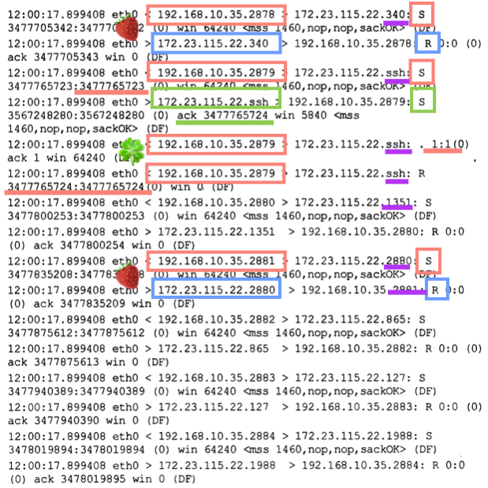
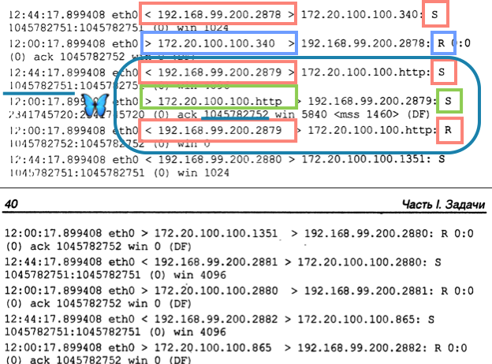
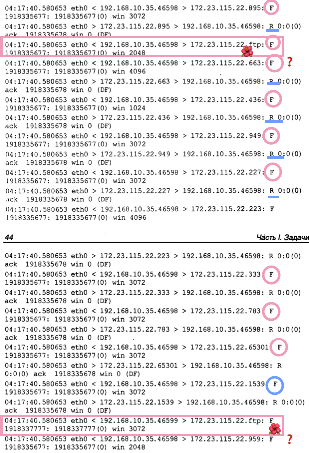
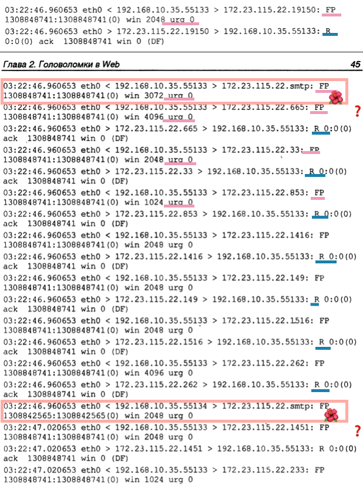
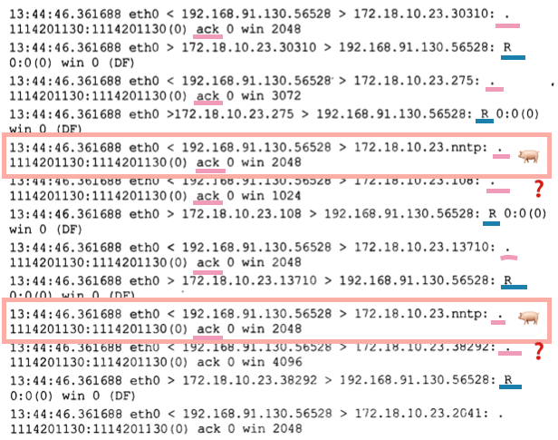
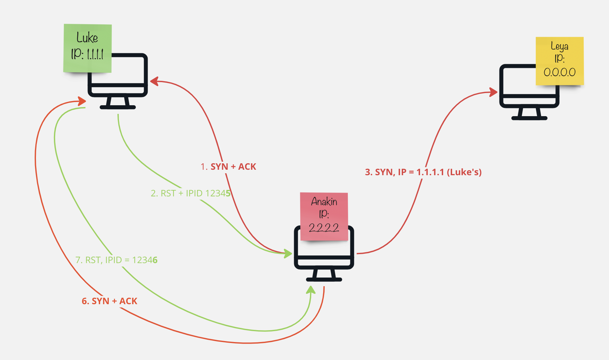
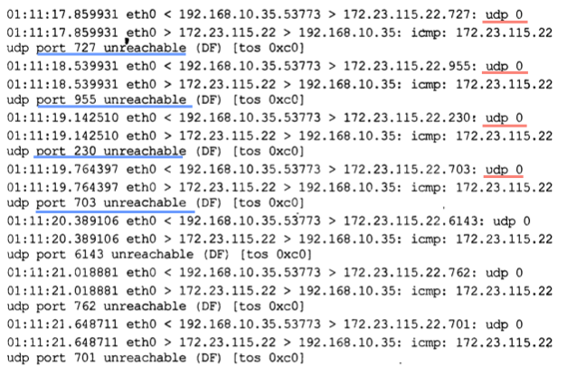
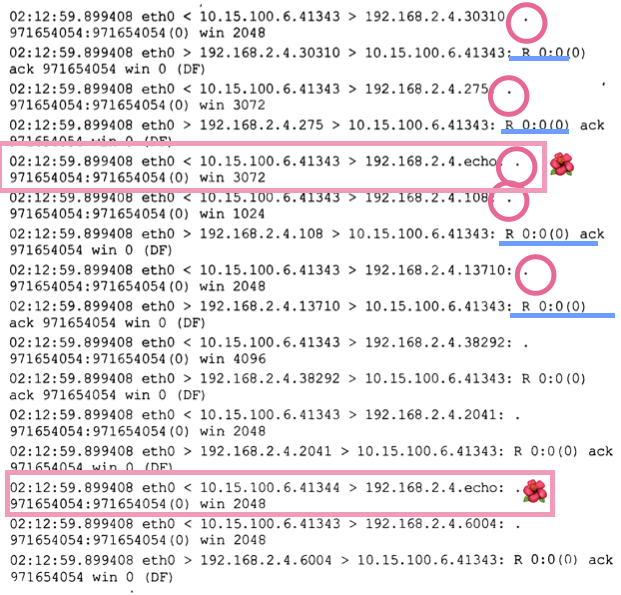

There are several techniques for port scanning. Some of them work for one OS only.
Full Connect
OS: Windows, Linux
Pros: The most reliable
Cons: Noisy
CMD: nmap -sT
Mechanics
It’s the simplest scanning technique. It established a full TCP connection (see the TCP overview article). The client sends a SYN flag, SYN/ACK is received, the client then ends the handshake with an ACK flag and the connection is established.
Responses
📫 Closed: RST
📭 Open: SYN + ACK
Examples

Note how the port numbers change in a random way, that’s a strong indicator of a scanning activity.
Stealth (Half-open)
OS: Windows, Linux
Pros: Stealthy. Firewalls won’t see that since there is no connection established.
Cons: IDS might spot it.
CMD: nmap -sS
Responses
📫 Closed: RST
📭 Open: SYN + ACK
An example of a tcpdump for this activity:
Examples

Inverse TCP Scan
OS: Linux
Pros: Very stealthy.
Cons: Windows will respond with “open” to all probes
CMD: nmap -sF (FIN flag), nmap -sN (no flag), hping -F (FIN), hping -P, hping -U (URG flag)
RFC: 793
Mechanics
Either of the following flags are sent: FIN, URG, PUSH, NULL
Responses
📫 Closed: RST + ACK
📭 Open: no response
Examples
Here is what FIN looks like in a tcpdump:

Xmas Scan
OS: Linux
Pros:
Cons: Windows will respond with “open” to all probes. Since the pattern is unusual for normal connections, might be detected by IDS.
CMD: nmap -sX, hping -X
Mechanics
Three flags set in the request: URG, PUSH and FIN. Xmas because several unual flag are “lit” as if the lights on a Christmas tree.
Responses
📫 Closed: RST + ACK 📭 Open: No response
Examples

FIN,PUSHandURGflags are set.- Since there is no response if the port is open, the scanning utility repeats the request.
ACK Flag Scan
OS: Old BSD
Pros: To avoid IDS
Cons: Slow.
CMD: nmap -sA -P0 <IP>, hping -A , nmap -sW
Mechanics
Usually, TCP connections starts with a SYN flag sent. In this case ACK flag is sent first instead. If the port is filtered, no response will be received. If not - RST flag will be returned. Based on the TTL or window size set in the resopnse, you can deduce if the port is open or closed.
Responses
📫 Closed: RST, TTL > 64 or window size == 0
📭 Open: RST, TTL < 64 or window size != 0
📬 Filtered: No response
Examples

IDLE Scan
OS: Windows, Linux
Pros: Stealthy. Firewalls won’t see that since there is no connection established.
Cons:
CMD: nmap -sI
Mechanics
It’s the scanning technique when you use another legit machine within the network to scan for you while observing certain artefacts afterwards to determine if the port was open or closed. It’s possible only when it’s possible to predict the next IPID value.
📭 Open:

📫 Closed:

Responses
📫 Closed: IPID is incremented by 1 📭 Open: IPID is incremented by 2
UDP Scan
OS: Windows, Linux
Pros: Zero byte message and UDP protocol, IDS?
Cons:
CMD: nmap -sU
Responses
📫 Closed: ICMP, port unreliable (3.3) 📭 Open: No response
Examples

NULL Scan
OS:
Pros:
Cons:
CMD: nmap -sN
Responses
📫 Closed: RST
📭 Open: No response
Examples
- No flags are set (tcpdump shows it as a
.where the flag would have normally been placed otherwise). - Since there is no response sent back in the case of an open port, the scanner will have to resend the packet to the same port to make sure it’s not a mistake. This request will not be resent immediately, so observe the ACK and SYN numbers.

Weird Scan
SYNandFINflag together (not normal). A lot of additional flags, weird order of requests, likeSYNfollowed bySYN+FINetc.- Could be used to determine the OS type + circumvent the port scanning rules.